商业命题
面向22–35岁城市女性，建立温柔但不甜腻、精致但不疏离的国产精华品牌。
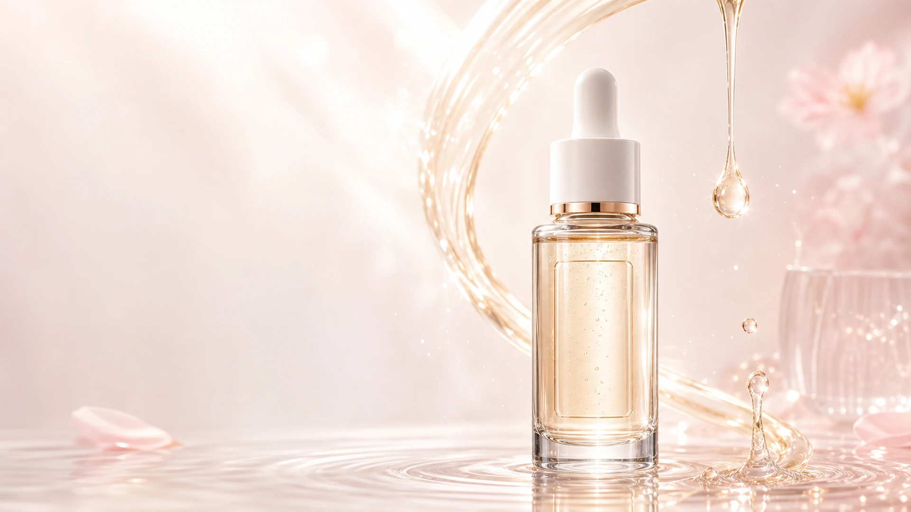
PROJECT BRIEF
悦芙兰是一项虚构护肤品牌广告练习。我以“液态光”为核心，将补水、修护与焕亮转化为同一套可复用的视觉语言。
面向22–35岁城市女性，建立温柔但不甜腻、精致但不疏离的国产精华品牌。
光代表肌肤状态，水代表修护过程，玻璃代表配方的清透与可信。
品牌策略、视觉研究、Prompt设计、图像筛选、后期排版、视频分镜与剪辑。
VISUAL RESEARCH
竞品不是模仿对象，而是判断依据。最终视觉由色彩、材质、光影和构图共同建立，而不是依赖一个模糊形容词。
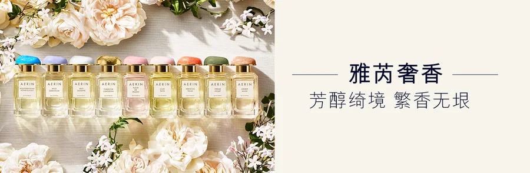
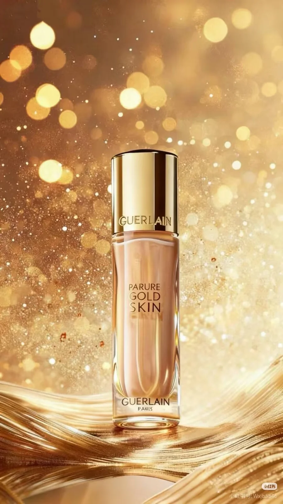
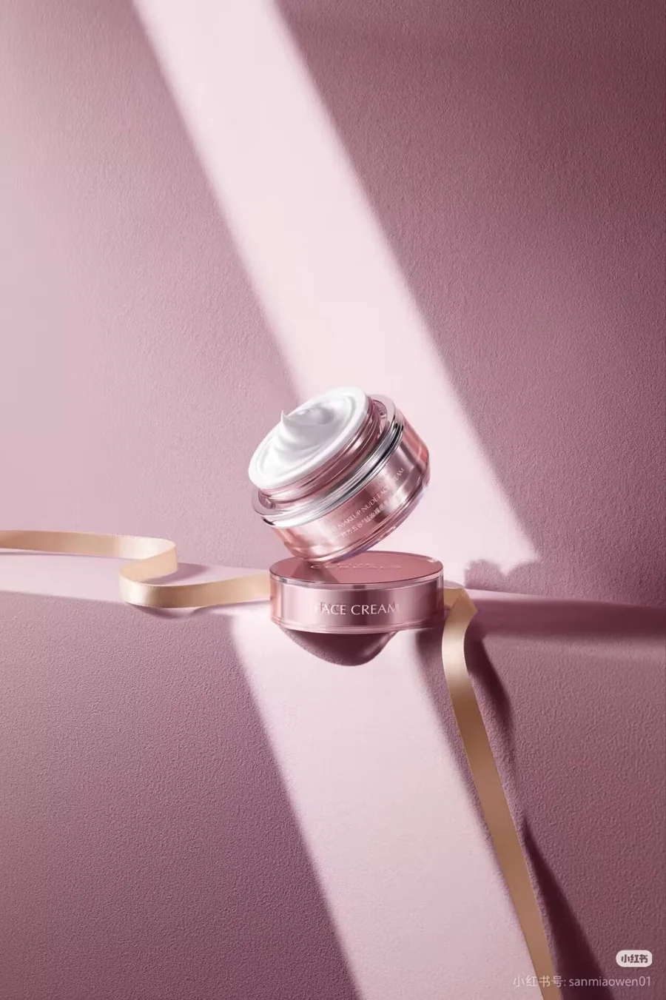
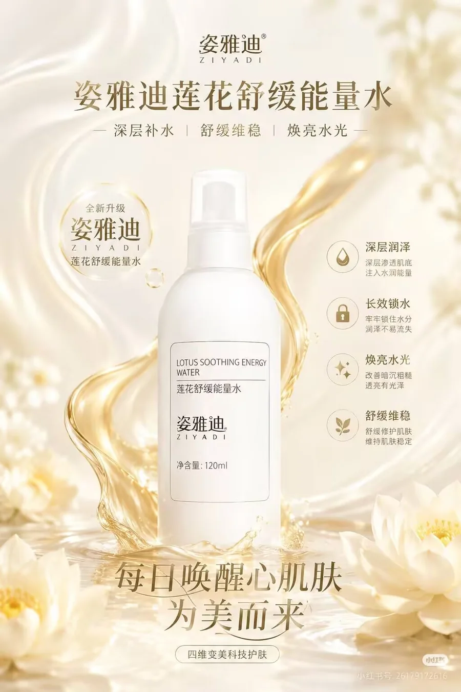
不用强红制造功效压迫，也不采用蓝白科技疏离感。以香槟金液态光建立修护可信度，用淡粉柔光保留女性情绪价值。
CONTROLLED GENERATION
第一轮不追求数量，而是用四个方向验证品牌调性、商业用途和后期成本，最终组合“纯净基调”与“液态香槟”。
AI WORKFLOW
AI参与策略拆解、提示词编排、图像探索、失败诊断与动态预演；品牌判断、瓶型一致性、排版和最终交付由人工完成。
策略 / Strategy
用于梳理品牌定位、受众、三个核心卖点，并把色彩、材质、光影、构图和镜头语言整理成可复用的提示词结构。
01 / 04
清透、干净、产品识别明确，适合作为稳定母版和品牌基础。
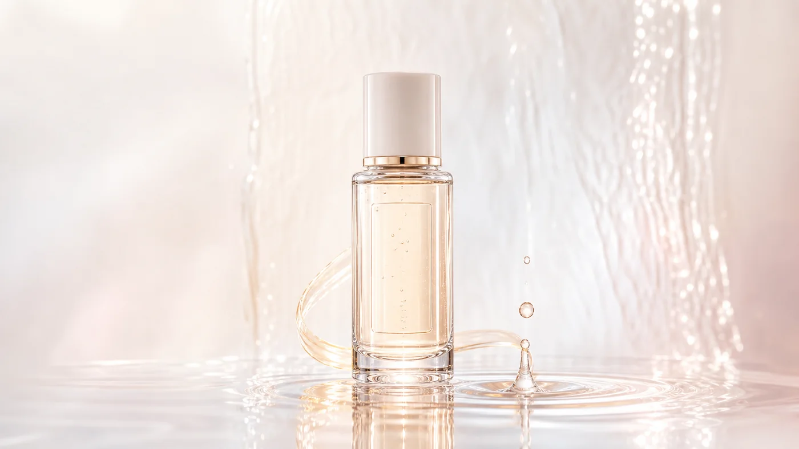
PROMPT LAB 01
一瓶高端女性护肤精华液产品，透明厚底玻璃滴管瓶，奶油白滴管胶头与瓶盖，瓶内为清透香槟金精华液，正面视角，瓶型比例稳定，产品完整清晰，置于浅水面中央；背景为奶油白与极淡粉色柔和渐变，透明液态光从瓶身后方缓慢环绕，水面形成克制的同心涟漪，玻璃边缘出现细腻折射与香槟金高光；商业护肤品摄影，柔和大面积逆光，真实玻璃厚度，精致但不过度闪耀，画面洁净通透，中心产品为唯一视觉主体，左侧或上方保留品牌文案区域，16:9横向广告构图，高分辨率，真实材质，适合高端国产护肤品牌主视觉。
错误文字，伪造Logo，瓶身畸形，滴管歪斜，多个产品，标签乱码，廉价塑料感，强烈粉色，过曝，复杂花卉，夸张水花，电商促销感，低清晰度，黑边，水印。
FAILED TEST / USEFUL JUDGMENT
相同参考图导致构图被锁死。我的调整不是继续抽卡，而是停止重复生成，改用稳定产品母版、独立背景和人工排版。
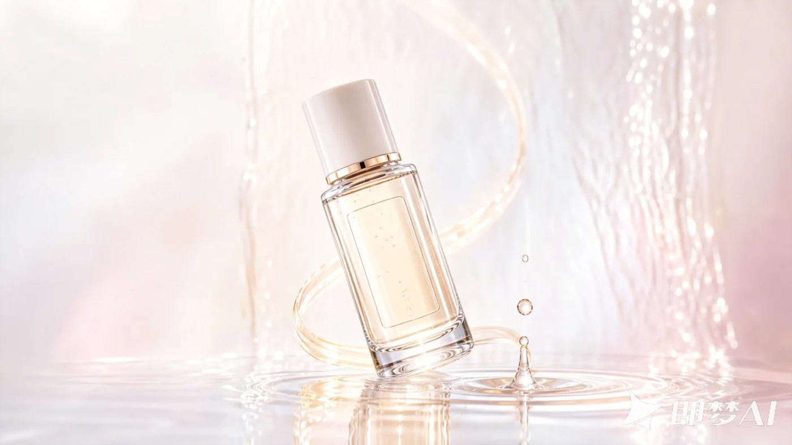
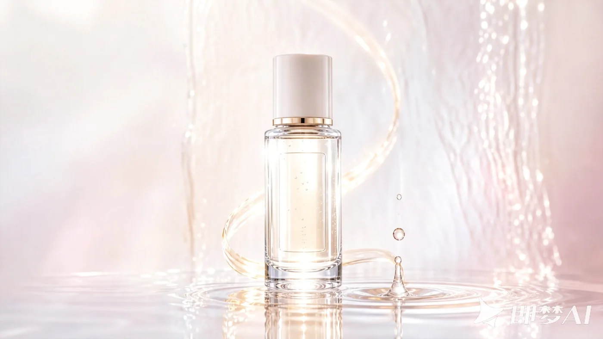
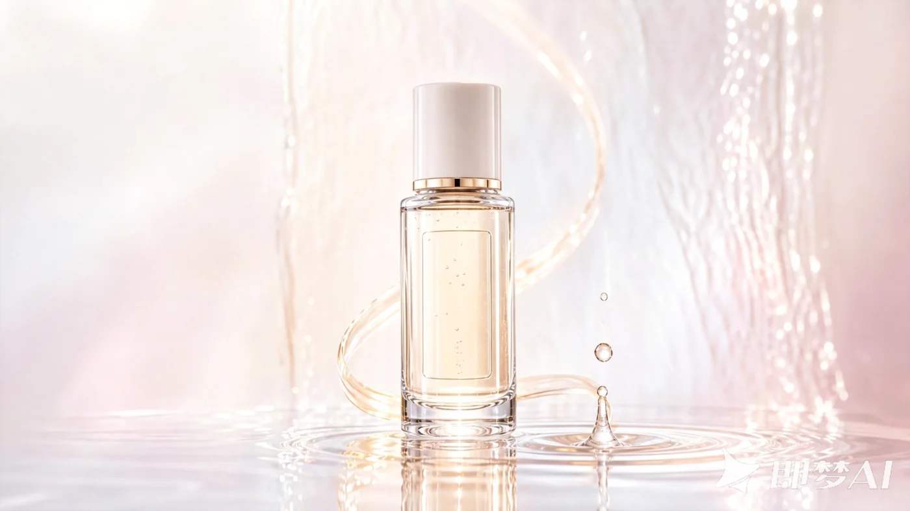
FINAL KEY VISUAL
最终画面固定滴管瓶型，以液态光环绕产品，用香槟金表达精华能量，用淡粉柔光保持亲和与女性气质。
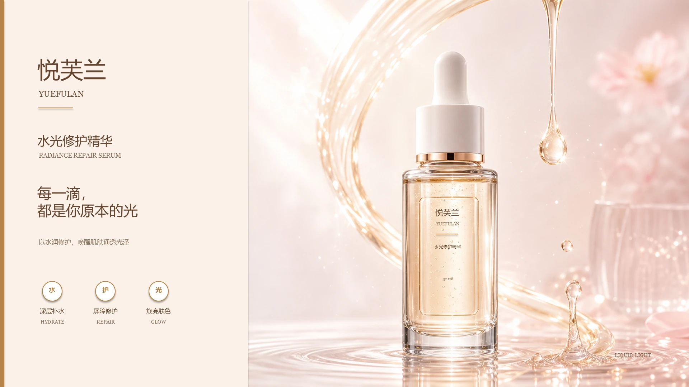
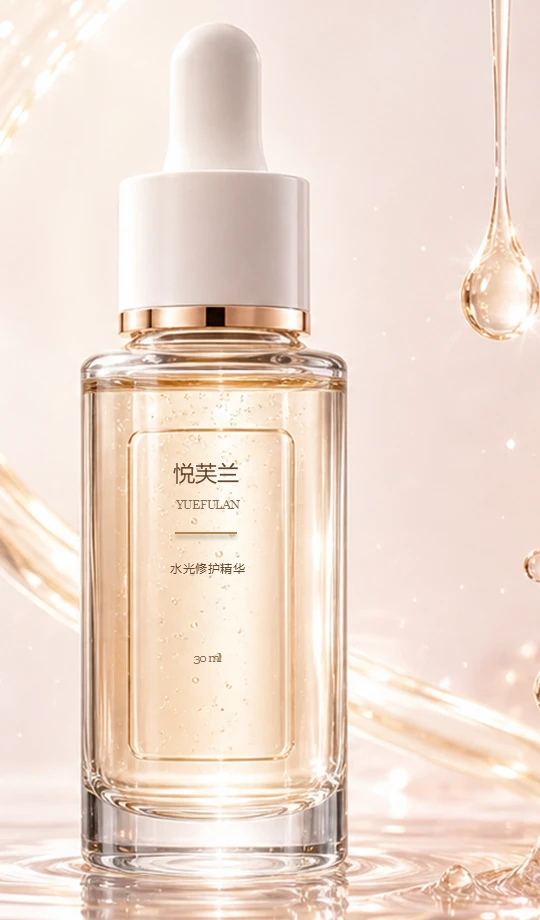
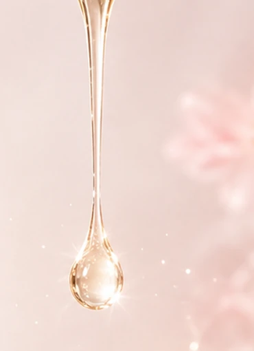
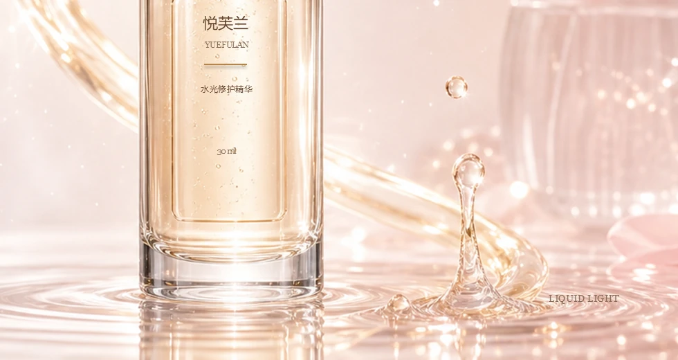
AI × HUMAN FINISHING
拖动滑块查看从无品牌底图到最终广告的变化：重新建立版式、标签、品牌层级和卖点信息，让画面真正可用于传播。
VISUAL SYSTEM
系列视觉不更换瓶型和核心光感，只通过局部色温与信息重点区分补水、修护和焕亮。
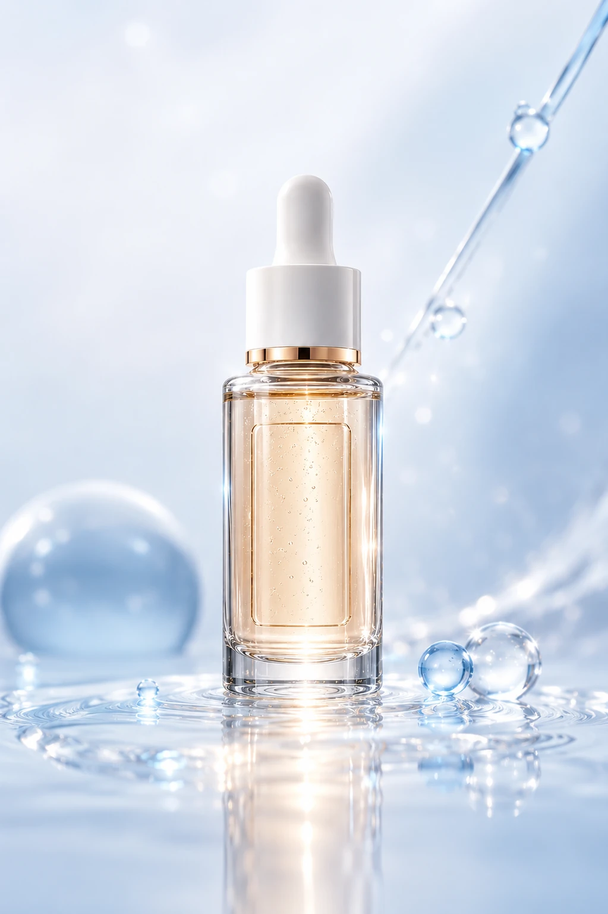
01
以冷白水膜、浅蓝水珠与清透涟漪建立即时补水感，暖金精华液保留悦芙兰的品牌识别。
20S PRODUCT FILM
广告以六个镜头完成“光滴凝聚—落入水面—形成修护膜—产品显现—品牌收束”的情绪变化，以音乐、环境声与动态文字完成叙事。
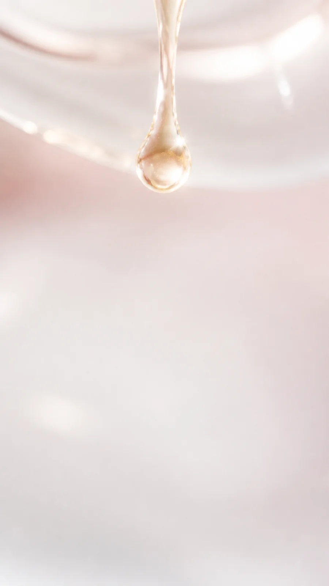
微观液态光在柔暗空间中汇聚，建立“一滴光”的核心符号。
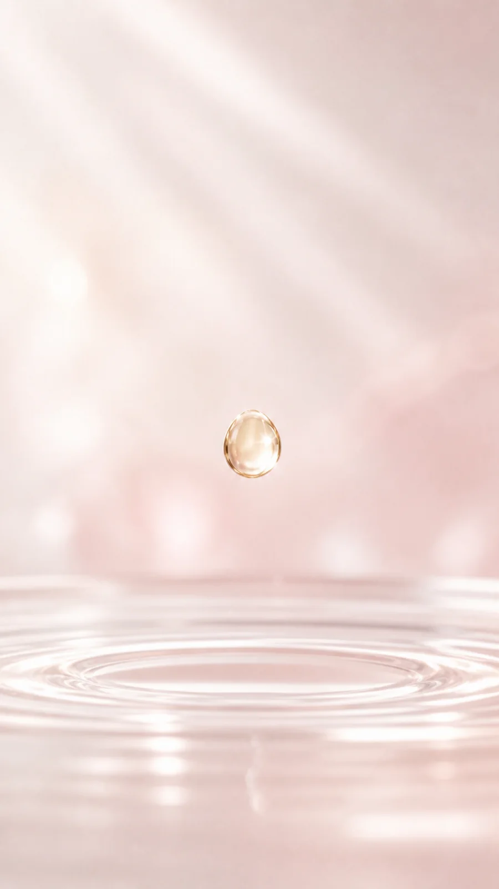
光滴触碰水面，涟漪向外扩散，连接补水卖点与叙事转折。
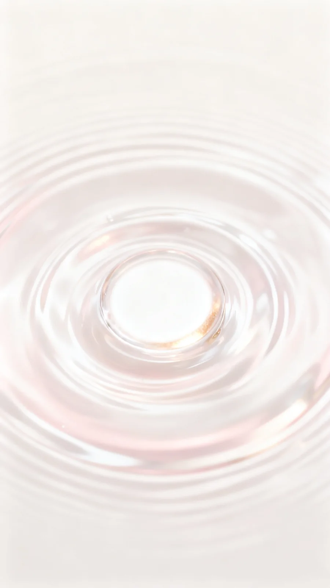
透明水膜形成柔和保护层，将屏障修护转化为可见视觉。
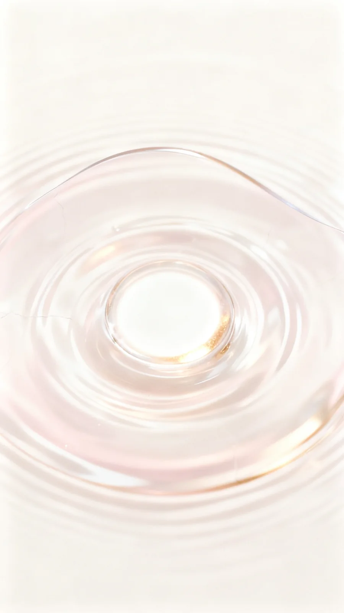
香槟金光由内向外透出，表达稳定、通透和肌肤光泽。
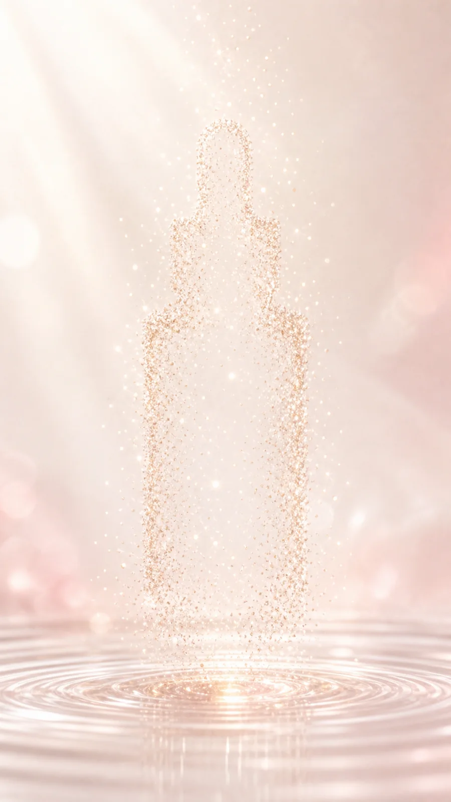
镜头从液态光过渡到完整产品，完成概念与商品的连接。
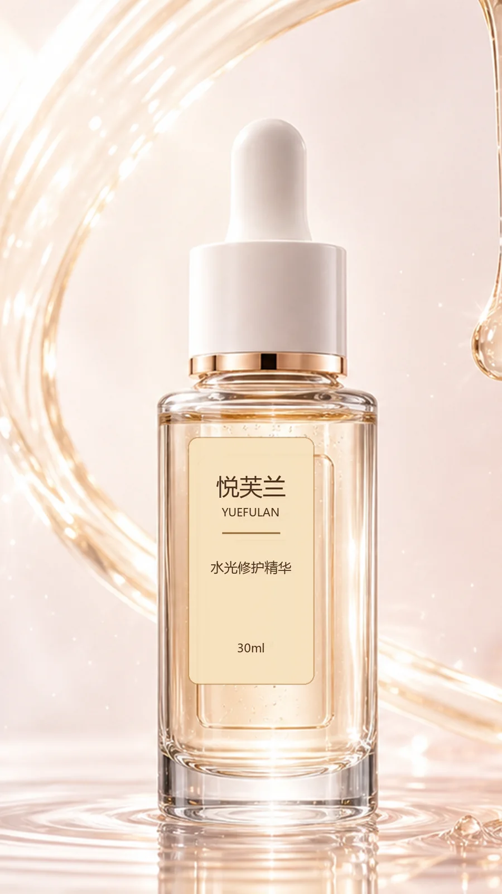
产品稳定定格，品牌与主张出现：“每一滴，都是你原本的光。”
WORKFLOW & REFLECTION
品牌定位、受众、卖点与视觉方向。
受控变量、小批量探索与结果记录。
识别趋同与瓶型漂移，主动停止无效生成。
稳定产品、人工标签、光影匹配和版式表达。
把主视觉扩展为分镜、图生视频与剪辑交付。
AIGC提高了视觉探索速度，但商业质量仍来自明确策略、严格筛选和人工完成度。